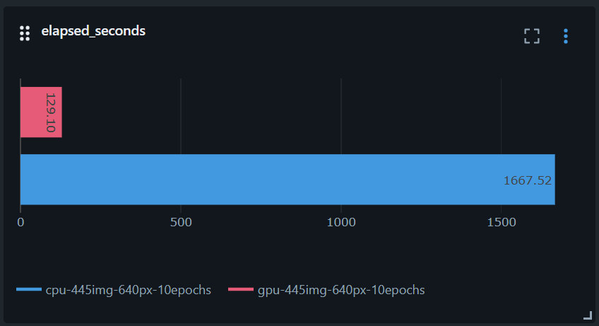
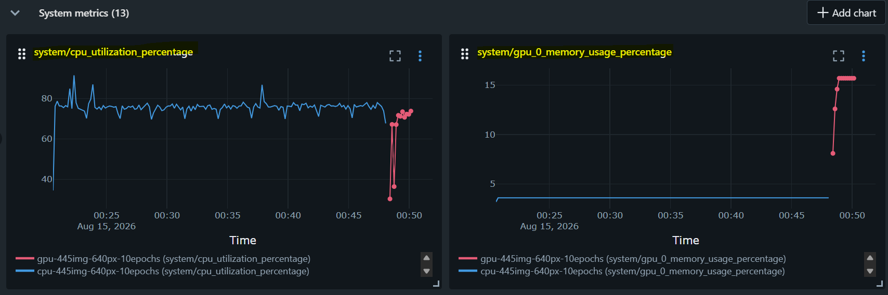
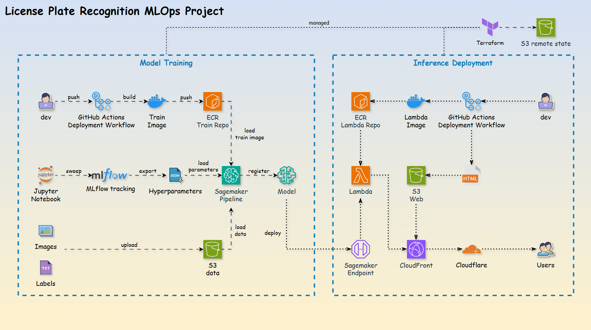
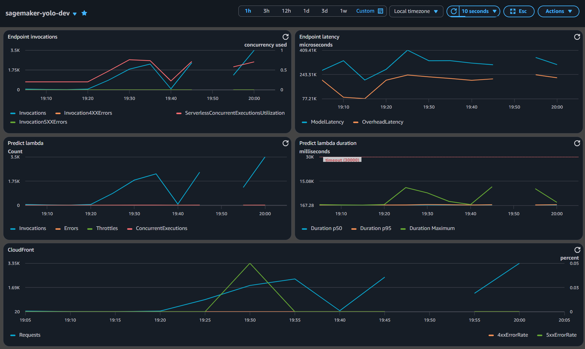

End-to-end MLOps workflow
An Amazon SageMaker project that trains and deploys a YOLO
object-detection model through a full MLOps workflow — from labelled images to a
serverless inference endpoint behind a public web app.
Computer vision models like YOLO are popular for object detection
in manufacturing.
Integrating these computer vision models reliably into business applications remains a significant challenge.
This project demonstrates an end-to-end MLOps workflow by training, deploying,
and serving a YOLO model that detects vehicle license plates.
Pick an image and run detection.
checking model…| # | Class | Confidence | Box (x1, y1, x2, y2) |
|---|
Your detection will appear here.
The YOLO model is trained with Amazon SageMaker Studio,
following a repeatable MLOps lifecycle:
SageMaker pipeline and log metrics to
MLflow.
mAP50-95 clears the 0.70 gate.
SageMaker serverless endpoint.
The same YOLO model, trained on the same dataset with the same
hyperparameters, on two instance types.
| Instance | Specification | GPU | Rate per hour ($) | Total min | Total cost ($) |
|---|---|---|---|---|---|
ml.m5.xlarge(cpu) |
4vCPU, 16 GiB | N/A | 0.257 | 27.8 | 0.379 |
ml.g4dn.xlarge(gpu) |
4vCPU, 16 GiB | Yes | 0.818 | 2.2 | 0.029 |
The GPU instance costs ~3x per hour but finishes ~11x faster, so the run is roughly ~12x cheaper overall.

Train time — cpu 27.8m vs gpu 2.2m

Resource use — cpu run (blue) ~75% cpu; gpu run (red) ~75% cpu, ~15% gpu
sagemaker-yolo model package group.
SageMaker serverless endpoint, so idle time costs nothing.
Lambda proxy behind CloudFront.
Cloudwatch Dashboard and costs with AWS Budgets.

Request flow through the deployed infrastructure

Dashboard shows application metrics.